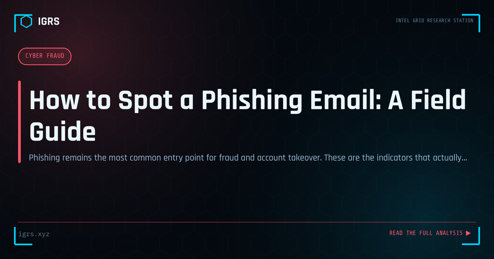

How to Spot a Phishing Email: A Field Guide
| File No. | OD-003/2026 |
| Subject | Behavioural and technical indicators of phishing, with verification workflow |
| Category | Privacy & Safety |
| Author | Manuj Kumar Pandey |
| Published | 2026-04-22 |
| Reading time | 12 minutes |
Phishing remains the most common entry point for fraud and account takeover. These are the indicators that actually work — beyond 'check for spelling mistakes'.
Spotting Phishing Emails: Your First Line of Defence
Phishing remains the single most common entry point for cyberattacks, and the ability to recognise a phishing email is one of the most valuable security skills anyone can develop. Whether targeting individuals for banking credentials or employees for corporate access, phishing relies on deception that careful observation can defeat. This guide teaches you how to spot phishing emails reliably.
The Anatomy of a Phishing Email
Phishing emails share recognisable characteristics. They create urgency or fear, impersonate trusted entities, contain suspicious links or attachments, and ultimately seek to make you act — clicking, downloading, or revealing information — before you think carefully. Learning to spot these elements transforms you from a potential victim into a capable first line of defence.
Red Flags to Watch For
| Red Flag | What It Indicates |
|---|---|
| Mismatched sender address | Display name differs from actual email |
| Urgent or threatening language | Pressure to bypass careful thinking |
| Generic greetings | "Dear Customer" instead of your name |
| Suspicious links | URLs that don't match the claimed sender |
| Unexpected attachments | Potential malware delivery |
| Spelling and grammar errors | Often present in phishing |
| Requests for credentials | Legitimate firms rarely ask via email |
Checking the Sender Address
The displayed sender name is easily faked, so always check the actual email address. Hover over or tap the sender to reveal the real address. Phishing often uses addresses that mimic legitimate ones — a bank email from "support@hdfc-secure.com" rather than the real domain, or subtle misspellings. A mismatch between the claimed identity and the actual address is a strong phishing indicator.
Inspecting Links Before Clicking
Links are the primary phishing weapon. Before clicking any link, hover over it (on desktop) or long-press (on mobile) to preview the actual destination URL. Phishing links often lead to lookalike domains designed to harvest credentials. Watch for misspelled domains, unusual top-level domains, IP addresses instead of domain names, and URLs that do not match the supposed sender. When in doubt, navigate to the site directly rather than clicking.
The Urgency Trap
Phishing thrives on urgency — "Your account will be suspended", "Immediate action required", "Suspicious activity detected". This manufactured pressure is designed to make you act before thinking. Legitimate organisations rarely demand instant action through email threats. When an email pressures you to act urgently, that pressure itself is a warning sign to slow down and verify.
Common Phishing Themes in India
Indian users face specific phishing themes: fake bank and UPI alerts, bogus KYC update demands, fake income tax refund notifications, electricity bill payment scams, fake delivery and courier messages, and lottery or prize scams. These exploit routine concerns and trusted institutions. Recognising that legitimate banks, the tax department, and utilities do not request credentials or payments through unsolicited links is key to defeating them.
Attachment Dangers
Unexpected attachments are a major phishing risk, potentially carrying malware. Be especially wary of executable files, Office documents prompting you to enable macros, and files with double extensions. Never open an attachment you were not expecting, even if it appears to come from someone you know — their account may be compromised. When uncertain, verify with the sender through a separate channel before opening.
What to Do With a Suspected Phishing Email
When you spot a phishing email:
- Do not click links or open attachments
- Do not reply or provide any information
- Report it to your IT/security team if at work
- Mark it as phishing in your email client
- Delete it
- If you already clicked, change passwords and alert security immediately
If You Fell for a Phishing Attack
If you entered credentials or clicked a malicious link, act quickly: change the password for the affected account and any account sharing that password, enable MFA, scan your device for malware, monitor for unauthorised activity, and if financial information was involved, contact your bank and report to cybercrime.gov.in and 1930. Fast action after a phishing mistake can prevent or limit the damage.
Building Phishing Awareness
Spotting phishing is a skill that improves with awareness and practice. The core habits — checking sender addresses, inspecting links before clicking, resisting urgency, and verifying through separate channels — become second nature over time. For Indian users facing a constant stream of phishing across email, SMS, and WhatsApp, this awareness is among the most practical and protective skills available. Every phishing email recognised and not acted upon is an attack defeated at the most common point of entry.